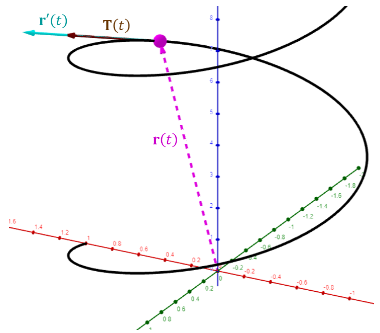
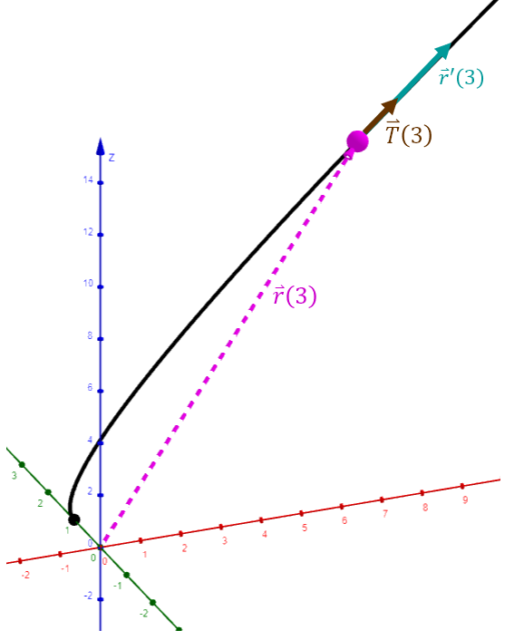

Lesson 8: Unit Tangent Vector
Consider a vector-valued function, \(\mathbf{r}(t)\). The unit tangent vector is denoted as \(\mathbf{T}(t)\) and defined below.
Unit Tangent Vector

- The unit tangent vector is the normalization of the tangent vector \(\mathbf{r}'(t)\).
- It is a vector with the same direction as \(\mathbf{r}'(t)\), but with magnitude one.
- \(\mathbf{T}(t)\) is a unit vector indicating the direction of motion.
- The unit tangent vector is essential to understanding motion, acceleration, and curvature.
Below is the definition of the unit tangent vector using another notation for vectors.
The unit tangent vector is velocity divided by speed.
An Example
Consider the below vector-valued function. Find the unit tangent vector, \(\mathbf{T}(t)\).
An Example
Consider the below vector-valued function. Find \(\vec{T}(3)\).

Consider the interval \(a < t < b\) and the curve \(C\) traced out by the vector function \(\mathbf{r}(t)\). Over this interval, \(C\) is called a smooth curve if the following three statements are true.
- \(\mathbf{r}(t)\) is continuous.
- \(\mathbf{r}'(t)\) exists and is continuous.
- \(\mathbf{r}'(t) \neq \mathbf{0}\).
Without these conditions, the unit tangent vector \(\mathbf{T}(t)\) might not exist or might be undefined.